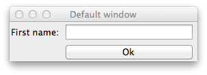

The Tk Package
This package provides an interface to the Tcl/Tk libraries, useful for creating graphical user interfaces. The basic functionality is provided by the tcl_eval function, which is used to pass on Tcl commands. The Canvas widget is used to create a device for plotting of julia's graphics. In particular, among others, the Winston and Images package can render to such a device.
The example sketch.jl illustrates this widget for a different purpose.
In addition, there are convenience methods for working with most of the widgets provided by Tk similar to the ones found in R's tcltk package. For example, we add the tcl function as a wrapper for tcl_eval which provides translations from julia objects into Tcl constructs.
Constructors
Constructors are provided for the following widgets
Toplevel: for top level windowsFrame,Labelframe,Notebook,Panedwindow: for the basic containersLabel,Button,Menu: basic elementsCheckbutton,Radio,Combobox,Slider,Spinbox: selection widgetsEntry,Text: text widgetsTreeview: for trees, but also listboxes and gridsSizegrip,Separator,Progressbar,Imagevarious widgets
The basic usage simply calls the ttk:: counterpart, though one can use named arguments to pass in configuration options. As well, some have a convenience interfaces.
Methods
In addition to providing constructors, there are few additional convenience methods defined.
The
configure,cget,tclvar,identify,state,instate,winfo,wm,bindmethods to simplify the corresponding Tcl commands. For a single option of a widget accessed viacgetand modified viaconfigure, one can use the index notation with a symbol, as inwidget[:option]orwidget[:option] = value.For widget layout, we have
pack,pack_configure,forget,grid,grid_configure,grid_forget, ... providing interfaces to the appropriate Tk commands, but alsoformlayoutandpage_addfor working with simple forms and notebooks and pane windows..We add the methods
get_valueandset_valueto get and set the primary value for a controlWe add the methods
get_itemsandset_itemsto get and set the item(s) to select from for selection widgets.We add the methods
width,height,get_sizeto get the on-screen size of a widget. For top level windows there areset_width,set_height, andset_sizefor adjusting the geometry. The:widthand:heightproperties are common to most widgets, and return the requested width and height, which need not be the actual width and height on screen.The conveniences
get_enabledandset_enabledto specify if a widget accepts user input
Examples
Hello world
A simple "Hello world" example, which shows off many of the styles is given by:
w = Toplevel("Example") ## A titled top level window
f = Frame(w, padding = [3,3,2,2], relief="groove") ## A Frame with some options set
pack(f, expand = true, fill = "both") ## using pack to manage the layout of f
#
b = Button(f, "Click for a message") ## Button constructor has convenience interface
grid(b, 1, 1) ## use grid to pack in b. 1,1 specifies location
#
callback(path) = Messagebox(w, title="A message", message="Hello World") ## A callback to open a message
bind(b, "command", callback) ## bind callback to 'command' option
bind(b, "<Return>", callback) ## press return key when button has focusWe see the use of an internal frame to hold the button. The frame's layout is managed using pack, the buttons with grid. Both these have some conveniences. For grid, the location of the cell can be specified by 1-based index as shown. The button callback is just a julia function. Its first argument, path, is used internally. In this case, we open a modal dialog with the Messagebox constructor when the callback is called. The button object has this callback bound to the button's command option. This responds to a mouse click, but not a press of the enter key when the button has the focus. For that, we also bind to the <Return> event.
For the R package tctlk there are numerous examples at http://bioinf.wehi.edu.au/~wettenhall/RTclTkExamples/ . We borrow a few of these to illustrate the Tk package for julia.
Tk commands are combined strings followed by options. Something like: .button configure -text {button text} is called as configure(button, text = "button text). Key-value options are specified with through named arguments, which are converted to the underlying Tcl object. Similarly, path names are also translated and functions are converted to callbacks.
Pack widgets into a themed widget for better appearance
Toplevel is the command to create a new top-level window. (Tk.Window is similar, but we give Toplevel a unique type allowing us to add methods, such as set_value to modify the title.) Toplevel windows play a special role, as they start the widget hierarchy needed when constructing child components.
A top level window is not a themed widget. Immediately packing in a Frame instance is good practice, as otherwise the background of the window may show through:
w = Toplevel()
f = Frame(w)
pack(f, expand=true, fill="both")Notes:
Sometimes the frame is configured with padding so that the sizegrip shows, e.g.
frame(w, padding = [3,3,2,2]).The above will get the size from the frame – which has no request. This means the window will disappear. You may want to force the size to come from the top level window. You can use
tcl("pack", "propagate", w, false)(wrapped inpack_stop_propagate) to get this:
w = Toplevel("title", 400, 300) ## title, width, height
pack_stop_propagate(w)
f = Frame(w)
pack(f, expand=true, fill="both")- resizing top level windows with the mouse can leave visual artifacts, at least on a Mac. This is not optimal! (The picture below can be avoided by packing an expanding frame into the top level widget.)
Message Box
The Messagebox constructor makes a modal message box.
Messagebox(title="title", message="message")An optional parent argument can be specified to locate the box near the parent, as seen in the examples.
File Dialogs
File Open, File Save and Choose Directory dialogs can be invoked as follows.
GetOpenFile()
GetSaveFile()
ChooseDirectory()Checkbuttons
Check boxes are constructed with Checkbutton:
w = Toplevel()
f = Frame(w)
pack(f, expand=true, fill="both")
cb = Checkbutton(f, "I like Julia")
pack(cb)
function callback(path) ## callbacks have at least one argument
value = get_value(cb)
msg = value ? "Glad to hear that" : "Sorry to hear that"
Messagebox(w, title="Thanks for the feedback", message=msg)
end
bind(cb, "command", callback) ## bind to command optionThe set_items method can be used to change the label.
Radio buttons

w = Toplevel()
f = Frame(w)
pack(f, expand=true, fill="both")
l = Label(f, "Which do you prefer?")
rb = Radio(f, ["apples", "oranges"])
b = Button(f, "ok")
map(u -> pack(u, anchor="w"), (l, rb, b)) ## pack in left to right
function callback(path)
msg = (get_value(rb) == "apples") ? "Good choice! An apple a day keeps the doctor away!" :
"Good choice! Oranges are full of Vitamin C!"
Messagebox(w, msg)
end
bind(b, "command", callback)The individual buttons can be accessed via the buttons property. This allows one to edit the labels, as in
set_items(rb.buttons[1], "Honeycrisp Apples")(The set_items method is used to set the items for a selection widget, in this case the lone item is the name, or label of the button.)
Menus
Menu bars for top level windows are easily created with the menu_add method. One can add actions items (pass a callback function), check buttons, radio buttons, or separators.
w = Toplevel()
tcl("pack", "propagate", w, false) ## or pack_stop_propagate(w)
mb = Menu(w) ## makes menu, adds to top-level window
fmenu = menu_add(mb, "File")
omenu = menu_add(mb, "Options")
menu_add(fmenu, "Open file...", (path) -> println("Open file dialog, ..."))
menu_add(fmenu, Separator(w)) ## second argument is Tk_Separator instance
menu_add(fmenu, "Close window", (path) -> destroy(w))
cb = Checkbutton(w, "Something visible")
set_value(cb, true) ## initialize
menu_add(omenu, cb) ## second argument is Tk_Checkbutton instance
menu_add(omenu, Separator(w)) ## put in a separator
rb = Radio(w, ["option 1", "option 2"])
set_value(rb, "option 1") ## initialize
menu_add(omenu, rb) ## second argument is Tk_Radio instance
b = Button(w, "print selected options")
pack(b, expand=true, fill="both")
function callback(path)
vals = map(get_value, (cb, rb))
println(vals)
end
callback_add(b, callback) ## generic way to add callback for most common event
)Entry widget

The entry widget can be used to collect data from the user.
w = Toplevel()
f = Frame(w); pack(f, expand=true, fill="both")
e = Entry(f)
b = Button(f, "Ok")
formlayout(e, "First name:")
formlayout(b, nothing)
focus(e) ## put keyboard focus on widget
function callback(path)
val = get_value(e)
msg = "You have a nice name $val"
Messagebox(w, msg)
end
bind(b, "command", callback)
bind(b, "<Return>", callback)
bind(e, "<Return>", callback) ## bind to a certain key press eventListboxes

There is no Listbox constructor; rather, we replicate this with Treeview simply by passing a vector of strings. Here we use a scrollbar too:
fruits = ["Apple", "Navel orange", "Banana", "Pear"]
w = Toplevel("Favorite fruit?")
tcl("pack", "propagate", w, false)
f = Frame(w)
pack(f, expand=true, fill="both")
f1 = Frame(f) ## need internal frame for use with scrollbars
lb = Treeview(f1, fruits)
scrollbars_add(f1, lb)
pack(f1, expand=true, fill="both")
b = Button(f, "Ok")
pack(b)
bind(b, "command") do path ## do style
fruit_choice = get_value(lb)
msg = (fruit_choice == nothing) ? "What, no choice?" : "Good choice! $(fruit_choice[1])" * "s are delicious!"
Messagebox(w, msg)
endThe value returned by get_value is an array or nothing. Returning nothing may not be the best choice, perhaps a 0-length array is better?
One can configure the selectmode, e.g. configure(lb, selectmode = "extended") with either extended (multiple selection possible, browse (single selection), or none (no selection).) The shortcut lb[:selectmode] = "extended" will also work.
The Treeview widget can also display a matrix of strings in a grid in addition to tree-like data.
An editable grid could be done, but requires some additional Tk libraries.
Combo boxes
Selection from a list of choices can be done with a combo box:

fruits = ["Apple", "Navel orange", "Banana", "Pear"]
w = Toplevel("Combo boxes", 300, 200)
tcl("pack", "propagate", w, false)
f = Frame(w); pack(f, expand=true, fill="both")
grid(Label(f, "Again, What is your favorite fruit?"), 1, 1)
cb = Combobox(f, fruits)
grid(cb, 2,1, sticky="ew")
b = Button(f, "Ok")
grid(b, 3, 1)
function callback(path)
fruit_choice = get_value(cb)
msg = (fruit_choice == nothing) ? "What, no choice?" :
"Good choice! $(fruit_choice)" * "s are delicious!"
Messagebox(w, msg)
end
bind(b, "command", callback)Here no choice also returns nothing. Use this value with set_value to clear the selection, if desired.
Editable combo boxes need to be configured by hand. (So combo isn't really what we have here :)
Text windows
The basic multi-line text widget can be done through:
w = Toplevel()
tcl("pack", "propagate", w, false)
f = Frame(w)
txt = Text(f)
scrollbars_add(f, txt)
pack(f, expand=true, fill = "both")Only a get_value and set_value is provided. One can configure other things (adding/inserting text, using tags, ...) directly with tcl or tcl_eval.
Events
One can bind a callback to an event in Tcl/Tk. There are few things to know:
Callbacks have at least one argument (we use
path). Withbind, other arguments are matched by name to correspond to Tcl/Tk's percent substitution. E.g.f(path, x, y)would get values for x and y through%x %y.We show how to bind to a widget event, but this can be more general. E.g., top level events are for all children of the window a style can match all object of that style.
many widgets have a standard
commandargument in addition to window manager events they respond to. The valuecommandcan be passed tobindas the event.The
bindmethod does most of the work. Thecallback_addmethod binds to the most common event, mostly thecommandone. This can be used to bind the same callback to multiple widgets at once.
Sliders
The Slider widget presents a slider for selection from a range of values. The convenience constructor allows one to specify the range of values through a Range object, or the low and high float values of the range. Note that get_value returns a float, even if used with an integer range.
w = Toplevel()
f = Frame(w)
pack(f, expand=true, fill="both")
pack(Label(f, "Int Range slider"), side="top")
s_range = Slider(f, 1:100)
pack(s_range, side="top", expand=true, fill="both", anchor="w")
bind(s_range, "command", path -> println("The range value is $(int(get_value(s_range)))"))
pack(Label(f, "Float slider"), side="top")
s_float = Slider(f, 0.0, 1.0)
pack(s_float, side="top", expand=true, fill="both", anchor="w")
bind(s_float, "command", path -> println("The float value is $(get_value(s_float))"))One can also call bind using the do idiom:
bind(sc, "command") do path
println("The value is $(get_value(sc))")
endSharing a variable between widgets

Some widgets have a textvariable option. These can be shared to have automatic synchronization. For example, the scale widget does not have any indication as to the value, we remedy this with a label.
w = Toplevel("Slider and label", 300, 200)
f = Frame(w); pack(f, expand = true, fill = "both")
sc = Slider(f, 1:20)
l = Label(f)
l[:textvariable] = sc[:variable]
grid(sc, 1, 1, sticky="ew")
grid(l, 2, 1, sticky="nw")
grid_columnconfigure(f, 1, weight=1)This combination above is not ideal, as the length of the label is not fixed. It would be better to format the value and use set_value in a callback.
Spinbox
The scale widget easily lets one pick a value, but it can be hard to select a precise one. The spinbox makes this easier. Here we link the two using a callback:
w = Toplevel("Slider/Spinbox")
f = Frame(w); pack(f, expand = true, fill = "both")
sc = Slider(f, 1:100)
sp = Spinbox(f, 1:100)
map(pack, (sc, sp))
bind(sc, "command", path -> set_value(sp, get_value(sc)))
bind(sp, "command", path -> set_value(sc, get_value(sp)))Images

The Image widget can be used to show gif files.
fname = Pkg.dir("Tk", "examples", "logo.gif")
img = Image(fname)
w = Toplevel("Image")
f = Frame(w); pack(f, expand = true, fill = "both")
l = Label(f, img)
pack(l)This example adds an image to a button.
fname = Pkg.dir("Tk", "examples", "weather-overcast.gif") ## https://code.google.com/p/ultimate-gnome/
img = Image(fname)
w = Toplevel("Icon in button")
f = Frame(w); pack(f, expand = true, fill = "both")
b = Button(f, "weather", img) ## or: b = Button(f, text="weather", image=img, compound="left")
pack(b)Graphics
The Canvas widget can be placed in a GUI to embed a graphics device. In the examples directory you can find an implementation of RStudio's manipulate function. This functions makes it very straightforward to define basic interactive GUIs for plotting with Winston.
To try it, run
require(Pkg.dir("Tk", "examples", "manipulate.jl"))The above graphic was produced with:
ex = quote
x = linspace( 0, n * pi, 100 )
c = cos(x)
s = sin(x)
p = FramedPlot()
setattr(p, "title", title)
if
fillbetween add(p, FillBetween(x, c, x, s) )
end
add(p, Curve(x, c, "color", color) )
add(p, Curve(x, s, "color", "blue") )
file(p, "example1.png")
p ## return a winston object
end
obj = manipulate(ex,
slider("n", "[0, n*pi]", 1:10)
,entry("title", "Title", "title")
,checkbox("fillbetween", "Fill between?", true)
,picker("color", "Cos color", ["red", "green", "yellow"])
,button("update")
)Frames
The basic widget to hold child widgets is the Frame. As seen in the previous examples, it is simply constructed with Frame. The padding option can be used to give some breathing room.
Laying out child components is done with a layout manager, one of pack, grid, or place in Tk.
pack
For pack there are several configuration options that are used to indicate how packing of child components is to be done. The examples make use of
side: to indicate the side of the cavity that the child should be packed against. Typically "top" to top to bottom packing or "left" for left to right packing.anchor: One of the compass points indicating what part of the cavity the child should be attached to.expand: should the child expand when packedfill: how should an expanding child fill its space. We use{:expand=>true, :fill=>"both"}to indicate the child should take all the available space it can. Use"x"to stretch horizontally, and"y"to stretch vertically.
Unlike other toolkits (Gtk, Qt), one can pack both horizontally and vertically within a frame. So to pack horizontally, one must add the side option each time. It can be convenient to do this using a map by first creating the widgets, then managing them:
w = Toplevel("packing example")
f = Frame(w); pack(f, expand=true, fill="both")
ok_b = Button(f, "Ok")
cancel_b = Button(f, "Cancel")
help_b = Button(f, "Help")
map(u -> pack(u, side = "left"), (ok_b, cancel_b, help_b))grid
For grid, the arguments are the row and column. We use integers or ranges. When given a range, the widget can span multiple rows or columns. Within a cell, the sticky argument replaces the expand, fill, and anchor arguments. This is a string with one or more directions to attach. A value of news is like Dict(:expand=>true, :fill=>"both"), as all four sides are attached to.
w = Toplevel("Grid")
f = Frame(w, padding = 10); pack(f, expand=true, fill="both")
s1 = Slider(f, 1:10)
s2 = Slider(f, 1:10, orient="vertical")
b3 = Button(f, "ew sticky")
b4 = Button(f, "ns sticky")
grid(s1, 1, 1:2, sticky="news")
grid(s2, 2:3, 2, sticky="news")
grid(b3, 2, 1)
grid(b4, 3, 1, sticky="ns") ## breaks themeWe provide the formlayout method for conveniently laying out widgets in a form-like manner, with a label on the left. (Pass nothing to suppress this.)
One thing to keep in mind: a container in Tk can only employ one layout style for its immediate children That is, you can't manage children both with pack and grid, though you can nest frames and mix and match layout managers.
Notebooks
A notebook container holds various pages and draws tabs to allow the user to switch between them. The page_add method makes this easy:
w = Toplevel()
tcl("pack", "propagate", w, false)
nb = Notebook(w)
pack(nb, expand=true, fill="both")
page1 = Frame(nb)
page_add(page1, "Tab 1")
pack(Button(page1, "page 1"))
page2 = Frame(nb)
page_add(page2, "Tab 2")
pack(Label(page2, "Some label"))
set_value(nb, 2) ## position on page 2Panedwindows
A paned window allows a user to allocate space between child components using their mouse. This is done by dragging a "sash". As with Notebook containers, children are added through page_add.
w = Toplevel("Panedwindow", 800, 300)
tcl("pack", "propagate", w, false)
f = Frame(w); pack(f, expand=true, fill="both")
pg = Panedwindow(f, "horizontal") ## orientation. Use "vertical" for up down.
grid(pg, 1, 1, sticky = "news")
page_add(Button(pg, "button"))
page_add(Label(pg, "label"))
f = Frame(pg)
formlayout(Entry(f), "Name:")
formlayout(Entry(f), "Rank:")
formlayout(Entry(f), "Serial Number:")
page_add(f)
set_value(pg, 100) ## set divider between first two pixels
tcl(pg, "sashpos", 1, 200) ## others set the tcl way